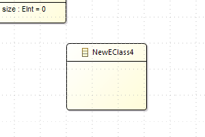
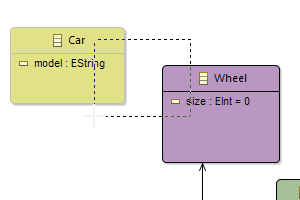
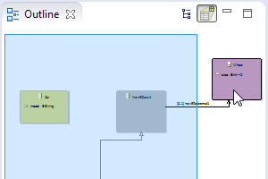
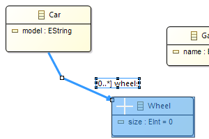
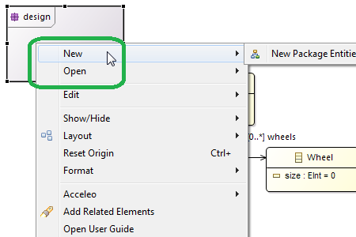

Performance & Scalability
For this release, a special effort was made on the performance and scalability.
These improvements have been tested and validated with models composed of more than 500 000 model elements displayed in 20 000 representations.
- Initialization: Sirius is initializing itself quicker providing a better feedback on startups and first usage.
- Calls from the UI: Calls from the UI are faster: it scales better when you have thousands of representations.
- Lists: Diagram having lists containing numerous elements are created and refreshed quicker.
- Select All: Select All operation is now instantly completed on a big model, without any lag.
- Tree Editors: Tree Editors defined using Sirius are now more efficient in refreshing the SWT Components.
- Delete: Delete operations are now scaling based on how many things have changed, independently of the size of the model.
User Experience
This release comes with many ergonomic improvements for a better edition of diagrams.
Shapes Distribution
Now users can homogeneously distribute shapes: horizontaly or vertically, based on the gap between shapes or their centers.

Edge Centering
The creator of the modeling tool can force an edge end to be always directed toward the center of a node.

Snap to Shape
Now, the Snap to Shape option is selected by default on new diagrams. It displays smart guides to help you aligning objects to each others.

Snap to Grid
When creating a new object with the Snap to grid option activated, it is automatically aligned to the grid.

Touching mode
When drawing a selecting zone on a diagram, each object touched by this zone will be added to the selection (before, the selected objects had to be entirely inside the zone).

Outline
When an object is not visible on the diagram, its selection from the outline reveals it: Sirius automatically moves the displayed zone of the diagram in order to make the object visible.

Layout
The move and resize of existing elements is better managed:
- Changing the location of an edge's end only changes its closest segment;
- Resizing a shape doesn't modify its edge(s) location;
- Increasing the size of a container doesn't modify the location of its children

Navigation and creation menus
The former Navigate menu on a diagram element has been replaced by two distinct ones:
- New: provides the sub-menus to create new diagrams for the selected element;
- Open: provides sub-menus to open existing diagrams owned by the selected element.

Headless mode
New APIs have been added to run Sirius without any UI.
Things like loading a representation resource, creating a diagram, refreshing it, modifying the model and saving can now be used as a server-side or continuous integration process.
The complete list of changes is available here: http://wiki.eclipse.org/Sirius/2.0.0#New_.26_Noteworthy.